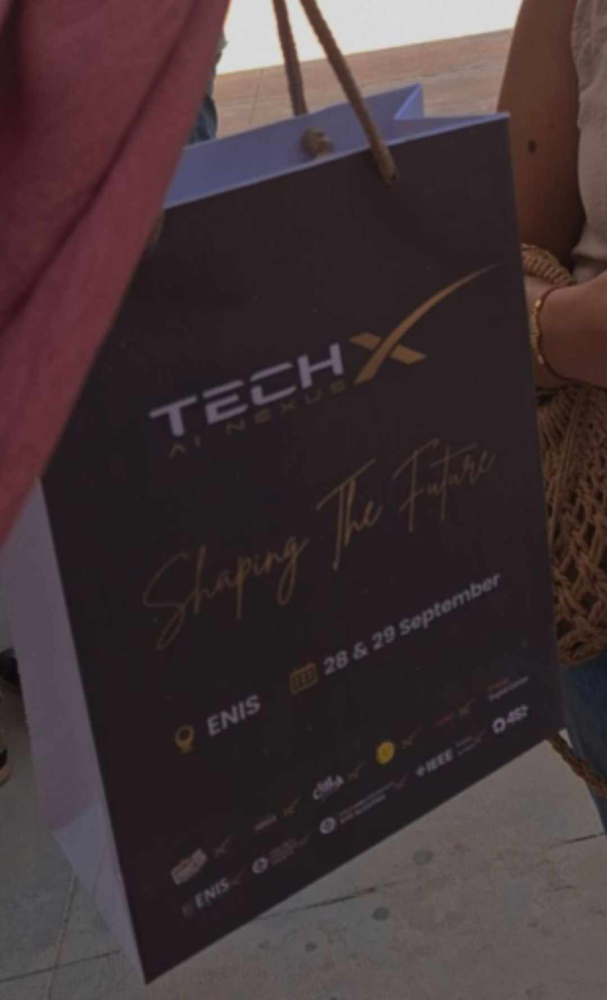

Événements Marquants à l'IIT
Participation à TechX - ENIS
Date : 18 Septembre 2024
Lieu : École Nationale d'Ingénieurs de Sfax (ENIS)
Description : Participation à TechX, un événement avec des ateliers, conférences et compétitions autour des nouvelles technologies. Cet événement a permis d'améliorer mes compétences techniques et de renforcer mon réseau.
Compétition IEEEXtreme 17.0
Date : 28 Octobre 2024
Lieu : institut international de technologie (IIT)
Description : Participation à la compétition mondiale IEEEXtreme 24 heures. Travail en équipe pour résoudre des problèmes de programmation complexes tout en représentant la faculté IIT avec succès.
Hackathon IEEE IIT
Date : 20-21 Novembre 2024
Lieu : institut international de technologie (IIT)
Description : Participation au hackathon organisé par le Club IEEE de l'IIT. L'objectif était de développer des solutions innovantes pour l'optimisation des ressources technologiques.
line follower training
Date : 11 et 18 decembre 2024
Lieu : institut international de technologie (IIT)
Description : Conception d'un robot suiveur de ligne pour les compétitions, visant à perfectionner les techniques en robotique et en programmation tout en relevant des défis techniques.